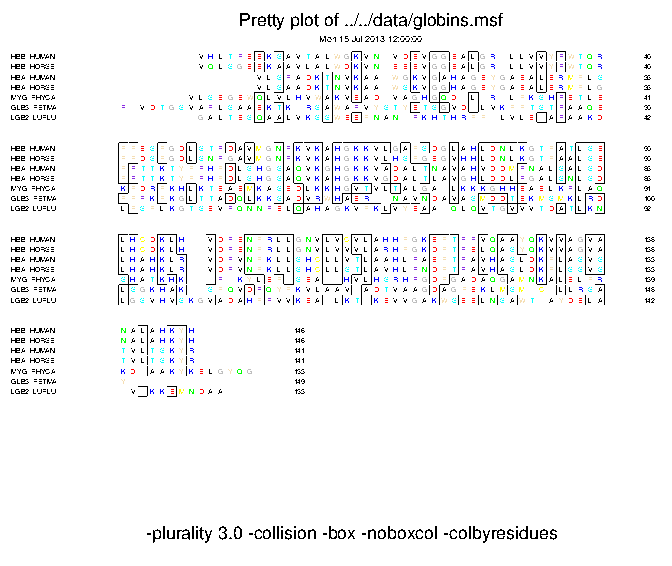

|
|
prettyplot |
Please help by correcting and extending the Wiki pages.
prettyplot draws a plot of the input sequence alignment. The sequences are rendered in pretty formatting on the specified graphics device. Drawing options control the appearance of the image, such as boxes, colour and shading for highlighting conserved regions.
% prettyplot -blocksperline=5 -boxcol -consensus -ratio=0.59 Draw a sequence alignment with pretty formatting Input (aligned) sequence set: globins.msf Graph type [x11]: cps Created prettyplot.ps |
Go to the input files for this example
Go to the output files for this example
Example 2
% prettyplot globins.msf -ratio=0.59 -docolour Draw a sequence alignment with pretty formatting Graph type [x11]: cps Created prettyplot.ps |
Go to the output files for this example
Draw a sequence alignment with pretty formatting
Version: EMBOSS:6.6.0.0
Standard (Mandatory) qualifiers:
[-sequences] seqset (Aligned) sequence set filename and optional
format, or reference (input USA)
-graph graph [$EMBOSS_GRAPHICS value, or x11] Graph type
(ps, hpgl, hp7470, hp7580, meta, cps, x11,
tek, tekt, none, data, xterm, png, gif, pdf,
svg)
Additional (Optional) qualifiers:
-matrixfile matrix [EBLOSUM62 for protein, EDNAFULL for DNA]
This is the scoring matrix file used when
comparing sequences. By default it is the
file 'EBLOSUM62' (for proteins) or the file
'EDNAFULL' (for nucleic sequences). These
files are found in the 'data' directory of
the EMBOSS installation.
-residuesperline integer [50] The number of residues to be displayed
on each line (Any integer value)
-blocksperline integer [1] Blocks of residues on each line (Integer
1 or more)
-[no]ccolours boolean [Y] Colour residues by their consensus
value.
-cidentity string [RED] Colour to display identical residues
(RED) (Any string)
-csimilarity string [GREEN] Colour to display similar residues
(GREEN) (Any string)
-cother string [BLACK] Colour to display other residues
(BLACK) (Any string)
-docolour boolean [N] Colour residues by table oily, amide
etc.
-shade string Set to BPLW for normal shading
(black, pale, light, white)
so for pair = 1.5,1.0,0.5 and shade = BPLW
Residues score Colour
1.5 or over... BLACK (B)
1.0 to 1.5 ... BROWN (P)
0.5 to 1.0 ... WHEAT (L)
under 0.5 .... WHITE (W)
The only four letters allowed are BPLW, in
any order. (Any string up to 4 characters,
matching regular expression
/^([BPLW]{4})?$/)
-pair array [1.5,1.0,0.5] Values to represent identical
similar related
-identity integer [0] Only match those which are identical in
all sequences. (Integer 0 or more)
-[no]doboxes boolean [Y] Display prettyboxes
-boxcol boolean [N] Colour the background in the boxes
-boxuse string [GREY] Colour to be used for background.
(GREY) (Any string)
-[no]name boolean [Y] Display the sequence names
-maxnamelen integer [10] Margin size for the sequence name. (Any
integer value)
-[no]number boolean [Y] Display the residue number
-[no]listoptions boolean [Y] Display the date and options used
-ratio float [0.5] Plurality ratio for a consensus match
(Number from 0.000 to 1.000)
-consensus boolean [N] Display the consensus
-[no]collision boolean [Y] Allow collisions in calculating
consensus
-alternative menu [0] Values are 0:Normal collision check.
(default)
1:Compares identical scores with the max
score found. So if any other residue matches
the identical score then a collision has
occurred.
2:If another residue has a greater than or
equal to matching score and these do not
match then a collision has occurred.
3:Checks all those not in the current
consensus.If any of these give a top score
for matching or identical scores then a
collision has occured. (Values: 0 (Normal
collision check. (default)); 1 (Compares
identical scores with the max score found.
So if any other residue matches the
identical score then a collision has
occurred.); 2 (If another residue has a
greater than or equal to matching score and
these do not match then a collision has
occurred.); 3 (Checks all those not in the
current consensus.If any of these give a top
score for matching or identical scores then
a collision has occured.))
-showscore integer [-1] Print residue scores (Any integer
value)
-portrait boolean [N] Set page to Portrait
Advanced (Unprompted) qualifiers: (none)
Associated qualifiers:
"-sequences" associated qualifiers
-sbegin1 integer Start of each sequence to be used
-send1 integer End of each sequence to be used
-sreverse1 boolean Reverse (if DNA)
-sask1 boolean Ask for begin/end/reverse
-snucleotide1 boolean Sequence is nucleotide
-sprotein1 boolean Sequence is protein
-slower1 boolean Make lower case
-supper1 boolean Make upper case
-scircular1 boolean Sequence is circular
-squick1 boolean Read id and sequence only
-sformat1 string Input sequence format
-iquery1 string Input query fields or ID list
-ioffset1 integer Input start position offset
-sdbname1 string Database name
-sid1 string Entryname
-ufo1 string UFO features
-fformat1 string Features format
-fopenfile1 string Features file name
"-graph" associated qualifiers
-gprompt boolean Graph prompting
-gdesc string Graph description
-gtitle string Graph title
-gsubtitle string Graph subtitle
-gxtitle string Graph x axis title
-gytitle string Graph y axis title
-goutfile string Output file for non interactive displays
-gdirectory string Output directory
General qualifiers:
-auto boolean Turn off prompts
-stdout boolean Write first file to standard output
-filter boolean Read first file from standard input, write
first file to standard output
-options boolean Prompt for standard and additional values
-debug boolean Write debug output to program.dbg
-verbose boolean Report some/full command line options
-help boolean Report command line options and exit. More
information on associated and general
qualifiers can be found with -help -verbose
-warning boolean Report warnings
-error boolean Report errors
-fatal boolean Report fatal errors
-die boolean Report dying program messages
-version boolean Report version number and exit
|
| Qualifier | Type | Description | Allowed values | Default | ||||||||
|---|---|---|---|---|---|---|---|---|---|---|---|---|
| Standard (Mandatory) qualifiers | ||||||||||||
| [-sequences] (Parameter 1) |
seqset | (Aligned) sequence set filename and optional format, or reference (input USA) | Readable set of sequences | Required | ||||||||
| -graph | graph | Graph type | EMBOSS has a list of known devices, including ps, hpgl, hp7470, hp7580, meta, cps, x11, tek, tekt, none, data, xterm, png, gif, pdf, svg | EMBOSS_GRAPHICS value, or x11 | ||||||||
| Additional (Optional) qualifiers | ||||||||||||
| -matrixfile | matrix | This is the scoring matrix file used when comparing sequences. By default it is the file 'EBLOSUM62' (for proteins) or the file 'EDNAFULL' (for nucleic sequences). These files are found in the 'data' directory of the EMBOSS installation. | Comparison matrix file in EMBOSS data path | EBLOSUM62 for protein EDNAFULL for DNA |
||||||||
| -residuesperline | integer | The number of residues to be displayed on each line | Any integer value | 50 | ||||||||
| -blocksperline | integer | Blocks of residues on each line | Integer 1 or more | 1 | ||||||||
| -[no]ccolours | boolean | Colour residues by their consensus value. | Boolean value Yes/No | Yes | ||||||||
| -cidentity | string | Colour to display identical residues (RED) | Any string | RED | ||||||||
| -csimilarity | string | Colour to display similar residues (GREEN) | Any string | GREEN | ||||||||
| -cother | string | Colour to display other residues (BLACK) | Any string | BLACK | ||||||||
| -docolour | boolean | Colour residues by table oily, amide etc. | Boolean value Yes/No | No | ||||||||
| -shade | string | Set to BPLW for normal shading (black, pale, light, white) so for pair = 1.5,1.0,0.5 and shade = BPLW Residues score Colour 1.5 or over... BLACK (B) 1.0 to 1.5 ... BROWN (P) 0.5 to 1.0 ... WHEAT (L) under 0.5 .... WHITE (W) The only four letters allowed are BPLW, in any order. | Any string up to 4 characters, matching regular expression /^([BPLW]{4})?$/ | |||||||||
| -pair | array | Values to represent identical similar related | List of floating point numbers | 1.5,1.0,0.5 | ||||||||
| -identity | integer | Only match those which are identical in all sequences. | Integer 0 or more | 0 | ||||||||
| -[no]doboxes | boolean | Display prettyboxes | Boolean value Yes/No | Yes | ||||||||
| -boxcol | boolean | Colour the background in the boxes | Boolean value Yes/No | No | ||||||||
| -boxuse | string | Colour to be used for background. (GREY) | Any string | GREY | ||||||||
| -[no]name | boolean | Display the sequence names | Boolean value Yes/No | Yes | ||||||||
| -maxnamelen | integer | Margin size for the sequence name. | Any integer value | 10 | ||||||||
| -[no]number | boolean | Display the residue number | Boolean value Yes/No | Yes | ||||||||
| -[no]listoptions | boolean | Display the date and options used | Boolean value Yes/No | Yes | ||||||||
| -ratio | float | Plurality ratio for a consensus match | Number from 0.000 to 1.000 | 0.5 | ||||||||
| -consensus | boolean | Display the consensus | Boolean value Yes/No | No | ||||||||
| -[no]collision | boolean | Allow collisions in calculating consensus | Boolean value Yes/No | Yes | ||||||||
| -alternative | list | Values are 0:Normal collision check. (default) 1:Compares identical scores with the max score found. So if any other residue matches the identical score then a collision has occurred. 2:If another residue has a greater than or equal to matching score and these do not match then a collision has occurred. 3:Checks all those not in the current consensus.If any of these give a top score for matching or identical scores then a collision has occured. |
|
0 | ||||||||
| -showscore | integer | Print residue scores | Any integer value | -1 | ||||||||
| -portrait | boolean | Set page to Portrait | Boolean value Yes/No | No | ||||||||
| Advanced (Unprompted) qualifiers | ||||||||||||
| (none) | ||||||||||||
| Associated qualifiers | ||||||||||||
| "-sequences" associated seqset qualifiers | ||||||||||||
| -sbegin1 -sbegin_sequences |
integer | Start of each sequence to be used | Any integer value | 0 | ||||||||
| -send1 -send_sequences |
integer | End of each sequence to be used | Any integer value | 0 | ||||||||
| -sreverse1 -sreverse_sequences |
boolean | Reverse (if DNA) | Boolean value Yes/No | N | ||||||||
| -sask1 -sask_sequences |
boolean | Ask for begin/end/reverse | Boolean value Yes/No | N | ||||||||
| -snucleotide1 -snucleotide_sequences |
boolean | Sequence is nucleotide | Boolean value Yes/No | N | ||||||||
| -sprotein1 -sprotein_sequences |
boolean | Sequence is protein | Boolean value Yes/No | N | ||||||||
| -slower1 -slower_sequences |
boolean | Make lower case | Boolean value Yes/No | N | ||||||||
| -supper1 -supper_sequences |
boolean | Make upper case | Boolean value Yes/No | N | ||||||||
| -scircular1 -scircular_sequences |
boolean | Sequence is circular | Boolean value Yes/No | N | ||||||||
| -squick1 -squick_sequences |
boolean | Read id and sequence only | Boolean value Yes/No | N | ||||||||
| -sformat1 -sformat_sequences |
string | Input sequence format | Any string | |||||||||
| -iquery1 -iquery_sequences |
string | Input query fields or ID list | Any string | |||||||||
| -ioffset1 -ioffset_sequences |
integer | Input start position offset | Any integer value | 0 | ||||||||
| -sdbname1 -sdbname_sequences |
string | Database name | Any string | |||||||||
| -sid1 -sid_sequences |
string | Entryname | Any string | |||||||||
| -ufo1 -ufo_sequences |
string | UFO features | Any string | |||||||||
| -fformat1 -fformat_sequences |
string | Features format | Any string | |||||||||
| -fopenfile1 -fopenfile_sequences |
string | Features file name | Any string | |||||||||
| "-graph" associated graph qualifiers | ||||||||||||
| -gprompt | boolean | Graph prompting | Boolean value Yes/No | N | ||||||||
| -gdesc | string | Graph description | Any string | Pretty plot | ||||||||
| -gtitle | string | Graph title | Any string | |||||||||
| -gsubtitle | string | Graph subtitle | Any string | |||||||||
| -gxtitle | string | Graph x axis title | Any string | |||||||||
| -gytitle | string | Graph y axis title | Any string | |||||||||
| -goutfile | string | Output file for non interactive displays | Any string | |||||||||
| -gdirectory | string | Output directory | Any string | |||||||||
| General qualifiers | ||||||||||||
| -auto | boolean | Turn off prompts | Boolean value Yes/No | N | ||||||||
| -stdout | boolean | Write first file to standard output | Boolean value Yes/No | N | ||||||||
| -filter | boolean | Read first file from standard input, write first file to standard output | Boolean value Yes/No | N | ||||||||
| -options | boolean | Prompt for standard and additional values | Boolean value Yes/No | N | ||||||||
| -debug | boolean | Write debug output to program.dbg | Boolean value Yes/No | N | ||||||||
| -verbose | boolean | Report some/full command line options | Boolean value Yes/No | Y | ||||||||
| -help | boolean | Report command line options and exit. More information on associated and general qualifiers can be found with -help -verbose | Boolean value Yes/No | N | ||||||||
| -warning | boolean | Report warnings | Boolean value Yes/No | Y | ||||||||
| -error | boolean | Report errors | Boolean value Yes/No | Y | ||||||||
| -fatal | boolean | Report fatal errors | Boolean value Yes/No | Y | ||||||||
| -die | boolean | Report dying program messages | Boolean value Yes/No | Y | ||||||||
| -version | boolean | Report version number and exit | Boolean value Yes/No | N | ||||||||
The input is a standard EMBOSS sequence query (also known as a 'USA').
Major sequence database sources defined as standard in EMBOSS installations include srs:embl, srs:uniprot and ensembl
Data can also be read from sequence output in any supported format written by an EMBOSS or third-party application.
The input format can be specified by using the command-line qualifier -sformat xxx, where 'xxx' is replaced by the name of the required format. The available format names are: gff (gff3), gff2, embl (em), genbank (gb, refseq), ddbj, refseqp, pir (nbrf), swissprot (swiss, sw), dasgff and debug.
See: http://emboss.sf.net/docs/themes/SequenceFormats.html for further information on sequence formats.
!!AA_MULTIPLE_ALIGNMENT 1.0
../data/globins.msf MSF: 164 Type: P 25/06/01 CompCheck: 4278 ..
Name: HBB_HUMAN Len: 164 Check: 6914 Weight: 0.61
Name: HBB_HORSE Len: 164 Check: 6007 Weight: 0.65
Name: HBA_HUMAN Len: 164 Check: 3921 Weight: 0.65
Name: HBA_HORSE Len: 164 Check: 4770 Weight: 0.83
Name: MYG_PHYCA Len: 164 Check: 7930 Weight: 1.00
Name: GLB5_PETMA Len: 164 Check: 1857 Weight: 0.91
Name: LGB2_LUPLU Len: 164 Check: 2879 Weight: 0.43
//
1 50
HBB_HUMAN ~~~~~~~~VHLTPEEKSAVTALWGKVN.VDEVGGEALGR.LLVVYPWTQR
HBB_HORSE ~~~~~~~~VQLSGEEKAAVLALWDKVN.EEEVGGEALGR.LLVVYPWTQR
HBA_HUMAN ~~~~~~~~~~~~~~VLSPADKTNVKAA.WGKVGAHAGEYGAEALERMFLS
HBA_HORSE ~~~~~~~~~~~~~~VLSAADKTNVKAA.WSKVGGHAGEYGAEALERMFLG
MYG_PHYCA ~~~~~~~VLSEGEWQLVLHVWAKVEAD.VAGHGQDILIR.LFKSHPETLE
GLB5_PETMA PIVDTGSVAPLSAAEKTKIRSAWAPVYSTYETSGVDILVKFFTSTPAAQE
LGB2_LUPLU ~~~~~~~~GALTESQAALVKSSWEEFNANIPKHTHRFFILVLEIAPAAKD
51 100
HBB_HUMAN FFESFGDLSTPDAVMGNPKVKAHGKKVLGAFSDGLAHLDNLKGTFATLSE
HBB_HORSE FFDSFGDLSNPGAVMGNPKVKAHGKKVLHSFGEGVHHLDNLKGTFAALSE
HBA_HUMAN FPTTKTYFPHFDLSHGSAQVKGHGKKVADALTNAVAHVDDMPNALSALSD
HBA_HORSE FPTTKTYFPHFDLSHGSAQVKAHGKKVGDALTLAVGHLDDLPGALSNLSD
MYG_PHYCA KFDRFKHLKTEAEMKASEDLKKHGVTVLTALGAILKKKGHHEAELKPLAQ
GLB5_PETMA FFPKFKGLTTADQLKKSADVRWHAERIINAVNDAVASMDDTEKMSMKLRD
LGB2_LUPLU LFSFLKGTSEVPQNNPELQAHAGKVFKLVYEAAIQLQVTGVVVTDATLKN
101 150
HBB_HUMAN LHCDKLH..VDPENFRLLGNVLVCVLAHHFGKEFTPPVQAAYQKVVAGVA
HBB_HORSE LHCDKLH..VDPENFRLLGNVLVVVLARHFGKDFTPELQASYQKVVAGVA
HBA_HUMAN LHAHKLR..VDPVNFKLLSHCLLVTLAAHLPAEFTPAVHASLDKFLASVS
HBA_HORSE LHAHKLR..VDPVNFKLLSHCLLSTLAVHLPNDFTPAVHASLDKFLSSVS
MYG_PHYCA SHATKHK..IPIKYLEFISEAIIHVLHSRHPGDFGADAQGAMNKALELFR
GLB5_PETMA LSGKHAK..SFQVDPQYFKVLAAVIADTVAAGDAGFEKLMSMICILLRSA
LGB2_LUPLU LGSVHVSKGVADAHFPVVKEAILKTIKEVVGAKWSEELNSAWTIAYDELA
151 164
HBB_HUMAN NALAHKYH~~~~~~
HBB_HORSE NALAHKYH~~~~~~
HBA_HUMAN TVLTSKYR~~~~~~
HBA_HORSE TVLTSKYR~~~~~~
MYG_PHYCA KDIAAKYKELGYQG
GLB5_PETMA Y~~~~~~~~~~~~~
LGB2_LUPLU IVIKKEMNDAA~~~
|
The output is to the specified graphics device.
The results can be output in one of several formats by using the command-line qualifier -graph xxx, where 'xxx' is replaced by the name of the required device. Support depends on the availability of third-party software packages.
The device names that output to a file are: ps (postscript), cps (colourps), png, gif, pdf, svg, hpgl, hp7470, hp7580, das, data.
The other available device names are: meta, x11 (xwindows), tek (tek4107t), tekt (tektronix), xterm, text.
Output can be turned off by specifying none (null).
See: http://emboss.sf.net/docs/themes/GraphicsDevices.html for further information on supported devices.

For protein sequences EBLOSUM62 is used for the substitution matrix. For nucleotide sequence, EDNAFULL is used.
EMBOSS data files are distributed with the application and stored in the standard EMBOSS data directory, which is defined by the EMBOSS environment variable EMBOSS_DATA.
To see the available EMBOSS data files, run:
% embossdata -showall
To fetch one of the data files (for example 'Exxx.dat') into your current directory for you to inspect or modify, run:
% embossdata -fetch -file Exxx.dat
Users can provide their own data files in their own directories. Project specific files can be put in the current directory, or for tidier directory listings in a subdirectory called ".embossdata". Files for all EMBOSS runs can be put in the user's home directory, or again in a subdirectory called ".embossdata".
The directories are searched in the following order:
A consesnsus sequence is calculated for the alignment and individual sequences compared to the consensus using the specified comparison matrix file. The default matrix for protein sequences is EBLOSUM62 and for nucleotide sequences is EDNAFULL. The drawing options render conserved sites and regions identified from the comparisons. For example, residues in a sequence are classed as "identical", "similar" or "other" to the consensus depending on user-specified thresholds of sequence similarity (-pair option). Residues in each class are rendered red, green and black by default (this can be changed).
There are other more general drawing options, for example, controlling the number of residues displayed per line, background shading and whether to display sequence names or not.
| Program name | Description |
|---|---|
| abiview | Display the trace in an ABI sequencer file |
| cirdna | Draw circular map of DNA constructs |
| edialign | Local multiple alignment of sequences |
| emma | Multiple sequence alignment (ClustalW wrapper) |
| iep | Calculate the isoelectric point of proteins |
| infoalign | Display basic information about a multiple sequence alignment |
| lindna | Draw linear maps of DNA constructs |
| pepinfo | Plot amino acid properties of a protein sequence in parallel |
| pepnet | Draw a helical net for a protein sequence |
| pepwheel | Draw a helical wheel diagram for a protein sequence |
| plotcon | Plot conservation of a sequence alignment |
| plotorf | Plot potential open reading frames in a nucleotide sequence |
| prettyseq | Write a nucleotide sequence and its translation to file |
| remap | Display restriction enzyme binding sites in a nucleotide sequence |
| showalign | Display a multiple sequence alignment in pretty format |
| showfeat | Display features of a sequence in pretty format |
| showpep | Display protein sequences with features in pretty format |
| sixpack | Display a DNA sequence with 6-frame translation and ORFs |
| tranalign | Generate an alignment of nucleic coding regions from aligned proteins |
Please report all bugs to the EMBOSS bug team (emboss-bug © emboss.open-bio.org) not to the original author.
Many features were first implemented in the EGCG program "prettyplot" by
Peter Rice
European Bioinformatics Institute, Wellcome Trust Genome Campus, Hinxton, Cambridge CB10 1SD, UK
Please report all bugs to the EMBOSS bug team (emboss-bug © emboss.open-bio.org) not to the original author.
The original suggestions for the PrettyPlot program were from Denis Duboule and Sigfried Labeit at EMBL. Gert Vriend added the star marking. Rita Grandori suggested the -NOCOLLISION option.